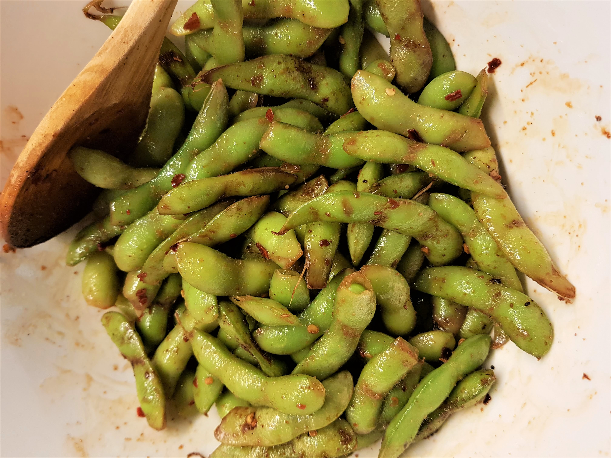

Spicy Edamame

Description
This is a descriptive paragraph about Stir-fried spicy Edamame and yada yada.
Ingredients
- 500g Edamame
- 1 tbsp Cooking oil
- 1 tsp Sesame oil
- 2 tbsp Soy sauce
- 1 tbsp Worcestershire Sauce
- 1 tbsp Apple Vinegar
- 1 tbsp Maple Syrup
- 1 tsp Ginger paste or powder
- 3 cloves Garlic
- Chili Flakes
- Sesame Seeds
- Salt and Pepper
Steps
- Heat cooking oil and add ginger and some chili flakes (only half of intended dosage).
- Add the Edamame, salt and garlic, mix well and cover for 5 minutes
- Deglaze with Worcestershire sauce and Apple Vinegar
- Add soy sauce, maple syrup and the rest of the chili flakes, stir well and cover till cooked, adding some water if needed.
- Turn off heat and add pepper, sesame seeds and sesame oil. Mix well and serve